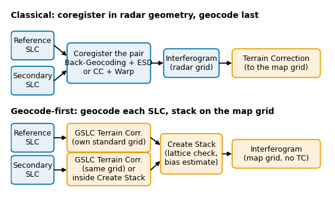

| SAR Concepts: Geocoded SLC (Geocode-First InSAR) | |
A geocoded SLC (GSLC) is a single-look complex image resampled onto a map grid in a way that keeps its phase usable for interferometry. Every acquisition is geocoded on its own, onto a shared lattice, so a stack of any length lines up pixel for pixel without pair-by-pair coregistration in radar geometry, and the interferogram comes out already on the map.
In the classical chain the Secondary is coregistered to the Reference in radar geometry (Back-Geocoding and ESD for TOPS, Cross-Correlation and Warp for stripmap), the interferogram is formed there and only the result is terrain corrected. The geocode-first chain resamples each SLC once, with orbits and a DEM, to the map position of every output pixel (Figure 1). Because all products share one standard grid, a new date is added by geocoding that date only, any two dates can be paired without a common radar Reference geometry, and the products overlay other map data directly. The price is that alignment rests on geometry (orbits, timing, DEM) rather than on image content, so Create Stack adds a small, data-driven offset correction when it geocodes a Secondary.

Figure 1. Classical chain (top) and geocode-first chain (bottom). Blue: radar geometry; orange: map grid.
For each output pixel P the operator solves the range-Doppler equations with the orbit and the DEM height, finds the radar position that saw P and interpolates the source SLC s there:
g(P) = s(r(P), a(P)), arg g(P) = −4πR(P)/λ + ψscat(P)
with λ the wavelength, R(P) the actual slant range to P (geometry plus ground motion and atmospheric path delay; 4π accounts for the two-way path) and ψscat the random scattering phase (sign convention as in InSAR Fundamentals). This default output is the natural SLC phase (for TOPS, without the azimuth carrier; see below), indexed by map position.
Complex data can only be interpolated near zero frequency (baseband). In range a focused SLC already is (4πR/λ belongs to each scatterer, not to the sample grid), so I/Q are interpolated directly. In azimuth the spectrum sits at the Doppler centroid fDC, so the carrier is removed before the kernel. For stripmap, 2πfDCη (η azimuth time) is put back afterwards. Each TOPS burst is deramped and demodulated with the annotation model (symbols as in TOPS)
φ(η, τ) = −πkt(τ)(η − ηref(τ))2 − 2πfDC(τ)η
and by default the output stays deramped, because this carrier depends on each date's burst timing and FM rate and does not cancel in an interferogram.
Output phase-flattened complex data (off by default) multiplies the result, after interpolation, by the phase of the operator's orbit-and-DEM range model Rmod:
gflat(P) = g(P) · exp(+j 4πRmod(P)/λ)
That leaves ψscat plus the unmodelled range (deformation, atmosphere, DEM and orbit errors). A
flattened pair is already a topography-removed interferogram. Interferogram reads the
gslc_output_flattened stamp: when every leg is flattened it does not subtract the flat-Earth and
topographic phase again, and it refuses a stack that mixes flattened and natural-phase legs. Use one setting for
every product in a stack; the default keeps the natural SLC phase.
On the shared grid, Reference × conj(Secondary) at P gives, as in the classical case,
φ(P) = (4π/λ) (Rsec(P) − Rref(P)) (modulo 2π)
with both ranges to the same ground point: the usual flat-Earth, topographic, deformation, atmospheric and orbit terms. For a natural-phase stack, Interferogram detects a geocoded stack and removes the flat-Earth phase (and, with Subtract topographic phase, the topographic phase) by recomputing this range difference from the two orbits, without tide or troposphere terms. In a flattened stack the flattening has already removed the flat-Earth and topographic phase, so Interferogram skips this step. Keep Subtract flat-earth phase ticked there anyway: Interferogram sets up the TOPS carrier difference and the burst seam steps only when Subtract flat-earth phase or Subtract topographic phase is selected, and on a flattened stack the flat-Earth phase is not subtracted twice.
Every GSLC is snapped to a global standard grid whose origin is a whole multiple of the pixel step from (0, 0), so two products with the same projection and step differ by whole pixels. Without an explicit spacing the step comes from Grid Spacing, rounded to a multiple of 5 cm:
| Grid Spacing | Step (east × north) | Sentinel-1 IW |
|---|---|---|
NATIVE_ANISOTROPIC (default) | slant-range spacing × azimuth spacing | ≈ 2.35 m × 14 m; native sampling on both radar axes, nothing discarded |
SQUARE_COARSEST | the coarser of the two, square | ≈ 14 m; about 4× of ground-range detail lost |
SQUARE_FINEST | the finer of ground range and azimuth, square | ≈ 3.5 m; about 16× the pixels of SQUARE_COARSEST |
With the default WGS84(DD) projection the east step is a fixed angle; the metadata range_spacing
and azimuth_spacing hold the true ground steps, which metre-based windows use (see
Coherence).
GSLC-Terrain-Correction) geocodes one product and has no
reference-product input. Input: stripmap SLC, or one TOPS sub-swath after TOPS Split, still in bursts.
Defaults: Copernicus 30m Global DEM, BISINC_5_POINT_INTERPOLATION,
WGS84(DD).azimuthCarrierPhase and flatteningPhase (4πRmod/λ), float64
radians. Interferogram uses azimuthCarrierPhase of both legs to remove the TOPS carrier
difference. Leave Restore TOPS azimuth carrier off (default) for InSAR.gslc_source_slc_path) and measures the residual offset: a constant shift from
Back-Geocoding and ESD for TOPS, a smooth polynomial offset field from cross-correlation for stripmap. If
the correction stays below 0.05 pixel everywhere in the scene, it is ignored; otherwise the Secondary is
geocoded again with it. A complex Secondary more than 0.01 pixel off the Reference lattice is
refused.gslc_burst_valid_times) and masked where the Reference has no matching burst, so no pixel
pairs looks from different bursts. Subtract burst seam steps (GSLC) in Interferogram (off by
default) removes remaining seam steps.flatteningPhase,
apart from a sub-pixel tidal shift of the sampling position; Interferogram reads neither, so they are not a
tide or troposphere correction of the interferogram. In a fully flattened stack they are part of the
Rmod removed from each leg, so the modelled tide and dry-delay difference between the dates is
removed from the interferogram.layoverShadowMask
= 1 for layover (local incidence below 5°), 2 for shadow (above 85°), 4 for no source or DEM. It
misses most layover and cast shadow (see Geometry).On one Sentinel-1 IW pair (Venezuela, S1A 23 June × S1C 24 June 2026, three bursts, ETAD on) the GSLC and classical interferograms agree at a phase concentration of 0.961; a three-date closure test (ETAD off, third date S1D 30 June) failed its gate, consistent with decorrelation. On an ERS-1/ERS-2 tandem pair (Etna, August 1995) the chains differ by 0.13 rad of scene-scale phase. Stripmap missions other than ERS were not tested; the GSLC workflow shows how to check your own result.
Workflow: Geocode-First InSAR with GSLC. Related: InSAR, TOPS, Coherence, Coregistration, Resampling, Terrain Correction.